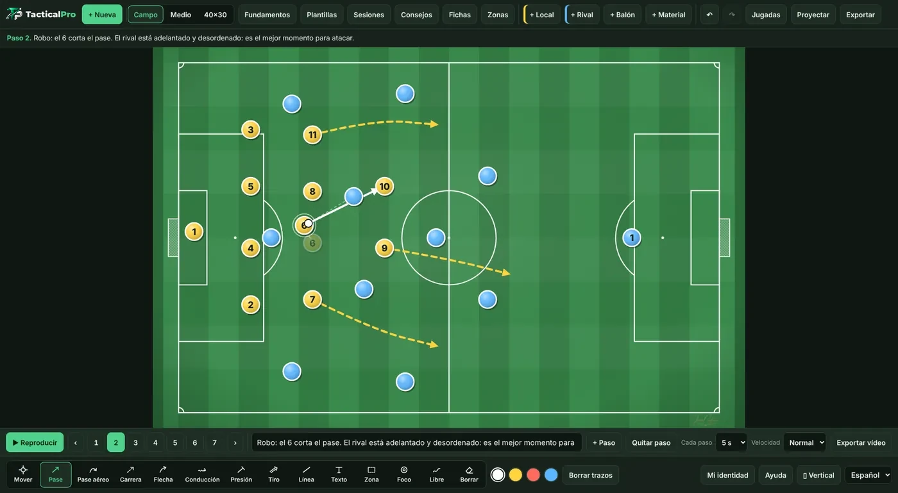
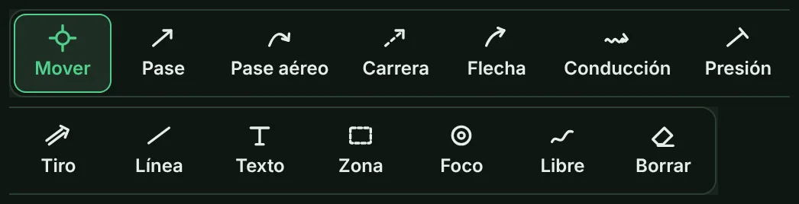
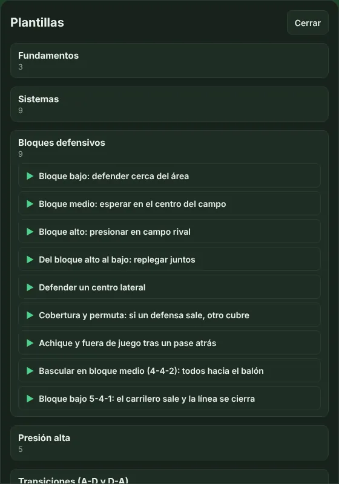
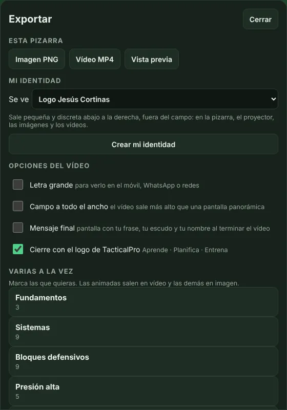
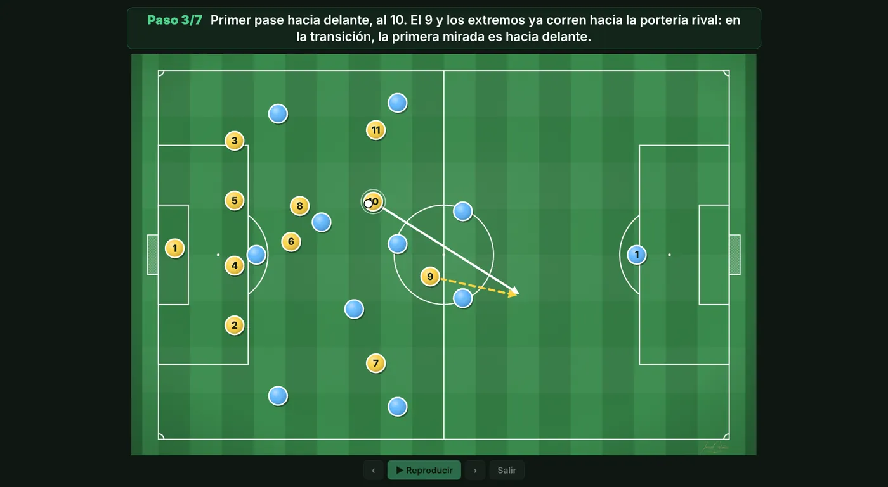

Consulta qué hace cada botón cuando lo necesites.
Qué hace cada botón
Arriba están los botones para crear y abrir contenido. Abajo, la animación, las herramientas y los ajustes.

- + Nueva: deja el campo vacío. Se puede deshacer con ↶.
- Campo ▾: cambia el tipo de campo y tiene «Zonas» y «Fichas».
- Biblioteca ▾: abre Plantillas, Sesiones, Fundamentos y Consejos: el contenido que trae la app.
- Fichas: (dentro de «Campo ▾») cambia la forma de las fichas, si se ve el número o el nombre y los colores de cada equipo.
- Zonas: (dentro de «Campo ▾») divide el campo en carriles y alturas para explicar dónde pasa cada cosa.
- + Local, + Rival, + Balón y + Material: añaden jugadores, el balón, conos, picas, vallas, porterías y más. «Girar 45°» orienta el material.
- ↶ y ↷: deshacen y rehacen el último cambio. En el ordenador también Ctrl+Z y Ctrl+Y.
- Jugadas, Proyectar y Exportar: guardan tus jugadas, las muestran a pantalla completa y las sacan en imagen o vídeo.
- Lo que haces se guarda solo en tu dispositivo. Al volver a abrir la app sigue tu última pizarra.
Herramientas de dibujo
Están en la barra de abajo. Elige una y dibuja sobre el campo. Los colores de al lado cambian el color del trazo.

- Mover: arrastra fichas y letreros. Es la herramienta normal.
- Pase: línea recta del balón. Al añadir un paso, el balón va al final.
- Pase aéreo: el balón va por arriba. Se curva hacia el lado al que dibujes; si lo haces recto, va recto.
- Carrera: un jugador se desplaza sin balón. Al añadir un paso, el jugador va al final.
- Conducción: un jugador avanza con el balón. Al añadir un paso, va al final con el balón.
- Presión: un jugador sale a presionar a un rival. También lo mueve.
- Tiro: disparo a portería. Mueve el balón.
- Flecha: una indicación para explicar. Es solo un dibujo: no mueve a nadie.
- Línea: recta para marcar una línea defensiva o una distancia.
- Flecha punteada y Línea punteada: trazos de puntos para señalar una idea, una referencia o una distancia. Son solo dibujos: no mueven a nadie.
- Texto: toca el campo, escribe un mensaje y elige color y tamaño. Arrástralo para moverlo y tócalo para editarlo.
- Zona, Foco y Libre: Zona marca un espacio, Foco ilumina un jugador o una zona clave y Libre es un trazo a mano.
- Borrar: toca un trazo o una ficha para quitarlo. «Borrar trazos» quita todos los dibujos de la pizarra o del paso.
- Con S Pen: si tocas una ficha, la mueves; si tocas el césped, dibujas con la última herramienta elegida. Mantén el botón lateral para borrar. Cuando la app ve el lápiz, el dedo solo mueve fichas, así puedes apoyar la mano.
Animación y ritmo
La barra de animación aparece encima de las herramientas.
- ▶ Reproducir: mueve la jugada de principio a fin. Las flechas ‹ › y los números van paso a paso.
- + Paso y Quitar paso: añaden un paso después del que tienes abierto o quitan ese paso.
- Cada paso y Velocidad: eligen cuánto dura cada paso (3, 5, 8 o 10 segundos) y si el movimiento es lento, normal o rápido. Vale para reproducir y para el vídeo.
- Ejemplo: para explicar en la charla, 8 segundos y velocidad Lenta; para WhatsApp, 5 segundos y Normal; para un vídeo corto, 3 segundos y Rápida.
Plantillas y sesiones
No hace falta empezar de cero: la app trae mucho contenido listo para usar. Está todo en el botón «Biblioteca ▾» de arriba.

- Plantillas: alineaciones, ejercicios, situaciones de juego y balón parado. Toca una y se abre en el campo. Las marcadas con ▶ se reproducen solas.
- Sesiones: entrenamientos completos de fútbol 11 con sus bloques y minutos. MD-3 significa 3 días antes del partido. Toca un bloque con ▶ para abrir su ejercicio.
- Fundamentos y Consejos: lo esencial de la táctica explicado desde cero, con un diccionario, e ideas prácticas para entrenar y gestionar el grupo.
- Ejemplo: abre una plantilla de córner, cambia los dorsales por los de tu equipo y guárdala en «Jugadas» como tuya.
Tu nombre y tu escudo
Pulsa «Mi identidad» abajo a la derecha para poner tu nombre, tu equipo y tu escudo en tus pizarras, imágenes y vídeos.
- Pulsa «+ Nuevo perfil» y rellena lo que quieras: nombre, cargo, club y escudo. Ningún dato es obligatorio.
- El escudo queda mejor en PNG con fondo transparente. Puedes tener varios perfiles, por ejemplo uno por equipo.
- En «Qué se ve» eliges qué sale abajo a la derecha, pequeño y fuera del campo.
- Mensaje final: al terminar el vídeo puede salir una pantalla con tu frase, tu escudo y tu nombre.
Exportar vídeo e imagen
En «Exportar» sacas tu pizarra para enviarla por WhatsApp o subirla a redes.

- Imagen PNG: una foto de la pizarra tal como está.
- Vídeo MP4: la jugada animada con sus textos. Necesita una jugada con pasos.
- Vista previa: mira el vídeo antes de crearlo y prueba las opciones.
- Opciones del vídeo: «Letra grande» para verlo en el móvil, «Campo a todo el ancho» y el cierre con el logo de TacticalPro, que puedes quitar.
- Varias a la vez: marca varias jugadas y se exportan juntas: las animadas en vídeo y las demás en imagen.
- En el móvil: al terminar, «Compartir» lo envía por WhatsApp u otra app.
- En el ordenador: «Guardar» lo deja en tus descargas. Si el navegador no puede crear vídeo, usa Chrome o Edge actualizados.
Usar el proyector
«Proyectar» pone la pizarra a pantalla completa, sin botones, para enseñarla en una tele o un proyector.

- En el móvil: toca el lado derecho de la pantalla para avanzar un paso y el izquierdo para volver.
- En el ordenador: usa las flechas del teclado o un mando de presentaciones. La barra espaciadora reproduce la jugada.
- Para salir, pulsa «Salir» o la tecla Esc.
- Ejemplo: conecta el portátil a la tele del vestuario, abre tu jugada y pulsa «Proyectar».
Instalar la app y copias de seguridad
TacticalPro se instala desde el navegador y funciona sin internet.
- Android: en Chrome, toca el menú ⋮ y elige «Instalar aplicación» o «Añadir a pantalla de inicio».
- iPhone y iPad: en Safari, toca Compartir y luego «Añadir a pantalla de inicio».
- En el ordenador: en Chrome o Edge, pulsa el icono de instalar en la barra de direcciones.
- Copia de seguridad: tus jugadas viven en este dispositivo. En «Jugadas», «Exportar copia de seguridad» crea un archivo con todas ellas y tu identidad. En otro móvil u ordenador, «Importar copia de seguridad» lo recupera sin duplicar nada.
- Idioma: el selector de abajo a la derecha cambia la app entre español e inglés.